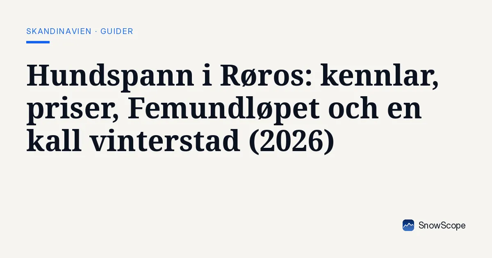

Hundspann i Røros: kennlar, priser, Femundløpet och en kall vinterstad (2026)
Røros, den gamla kopparstaden nära gränsen till Sverige, blir ett vinterhubben för hundspann när kylan kommer. Plateauklimatet här är stramt och torrt. Den 13 november registrerade väderstation på 630 m 11 cm snö—inte djup, men tillräckligt för att känna att vintern har börjat och för att köra de första spannturerna på säsongen.
Se snöprognosen för Scandinavia live i SnowScope-appenSnödjup, pudervarningar och 3D-kartan, gratis.

Där du hittar hundspann och hundar
Destination Røros-hemsidan listar aktiva hundgårdar i och omkring staden. Hundgården Dølanvollen, omkring 10 minuter norr om staden, är tydlig med vad den erbjuder: en 2-timmarstur kostar 2 500 NOK per person, en kortare tur 1 500 NOK och barn 1 000 NOK. När snön är knapp eller marken bar byter hundgården till vagnkörning istället för spann. Den stänger om termometern sjunker under −20 °C, vilket händer regelbundet här.
Fjestad Husky driver 40 Alaskahuskies i Tufsingdalen och grundades av en av arrangörerna för Femundløpet-loppet. Längre söderut nära Tynset kör Eywas Trails halva dagar på omkring 2,5 timmar. Alla tre tar bokningar i förväg, särskilt när vintern fördjupas och dagsljuset krymper.
Femundløpet i februari: huvudeventet
Längdloppet för hundspann Femundløpet startar och slutar i Røros. Den längsta klassen, F650, avgår från Kjerkgata (huvudgatan i denna världsarvstad) den 10 februari 2027. Klasserna F450 och junior börjar den 11 februari och F200 den 12 februari. Att stå på gatan och se lag dra iväg är det bästa sättet att se dussintals hundar på en gång, alla utrustade och ivriga.
Om du planerar att komma och titta, kom tidigt. Staden fylls snabbt på loppmorgnarna och parkering nära Kjerkgata blir svår att hitta. Starten är gratis att titta på och lockar både lokalbefolkning och besökare.
Kyla som biter: vad platåklimatet betyder
Røros ligger på 630 m höjd i landets inre, långt från havets dämpande effekt. Vinterkylans här är skarp och ihållande. Den torra luften på högslätten gör att kylan känns djupare än bara termometern visar. I mitten av november har 11 cm snö just fallit; om några veckor, om vädersmönstret håller kallt, kommer djupet att växa. För tillfället är säsongen ung och snön ännu tunn.
Hundgårdarna känner denna landskap väl. Hundgården Dølanvollen kör inte under −20 °C för att det är då när risken för förfryspng och hundens stress blir för höga. Högslätten når denna kyla, så några vinterveckor kan tvinga avbokningar eller ombokning. Detta är normalt för Røros i januari och februari.
Promenera med din egen hund på högslätten
Om du tar med en hund till Røros, kom ihåg att renhjordar använder regionen på vintern och är ofta nära vägar och stigar. Norsk lag skyddar boskap och vilda djur året runt; en hund måste hållas i koppel där renarna kan beta. Håll din hund nära sig när du vandrar eller går omkring på högslätten.
På skidspåren som är upprustade, säg till sidan och låt inte din hund springa i spåret själv. Om din hund har kort hår, ta med en tygeldräkt för den djupa kylan. Den torra vinden och intensiva kylan på högslätten kan vara hård mot en hundes tassar och hud.
Timing för ditt besök: snö och dagsljus
Början av november är tröskel. Den 13 november hade den första riktiga snön fallit vid väderstation (11 cm), men säsongen var ännu mycket ung. Om du vill boka en hundspanntur, erbjuder början av januari och februari bättre snödjup och en kall, stabil säsong. Priset är kortare dagsljus: solen går tidigare ner varje dag när vintern fördjupas.
Packa ullskikt istället för en enda tung jacka. Den torra kylan biter hårdare än du förväntar dig. Täck ditt ansikte, händer och fötter. Fråga hundgården när du bokar vad du ska ha med dig; de känner högslätten och kommer att ge dig råd.
Tips för skidåkare
- Boka din hundspanntur i förväg, särskilt för januari och februari. Fråga hundgården vad den gör om temperaturen sjunker under −20 °C eller om snön försvinner: vagnkörning, ombokningsmöjligheter eller stängningar.
- För Femundløpet i februari, kom tidigt till Kjerkgata på loppmorgnarna (10–12 februari 2027). Gatan och parkeringen fylls snabbt.
- Klä dig i ullskikt och täck blottad hud: högslätten är kall och torr men intensiv, och vindkyla från ett rörligt spann gör den känslas värre.
- Om du tar med en hund, håll den i koppel på och omkring högslätten för att skydda renhjordarna. Gå bredvid upprustade stigar, inte i spåret. Ta med en tygeldräkt för korthariga hundar på djup vinter.
- Kontrollera förhållandena med hundgårdarna innan du åker. Snö på 11 cm den 13 november är tidig säsongsnö; vissa turer kan vara på bar mark med vagnkörning, eller ombokas till senare veckor när snön är djupare.
Om siffrorna
Snödjupen för skidorterna är det djupaste snötäcket på ortens övre backar på det angivna datumet; de är uppskattningar för ett område, inte en mätning på en punkt. Prognoser kan ändras. Läs alltid den officiella lavinprognosen innan du åker offpist.
Citera den här rapporten
För forskning, undervisning eller press: siffrorna och diagrammen får återanvändas fritt under CC BY 4.0 med den här källhänvisningen.
SnowScope (2026), Hundspann i Røros: kennlar, priser, Femundløpet och en kall vinterstad (2026), https://snowscope.app/blog/sv/2026/11/roros-dog-sledding-femund-winter-guide-2026.html, hämtad 2026-11-14
SnowScope (Atlas Labs). (2026, November 14). Hundspann i Røros: kennlar, priser, Femundløpet och en kall vinterstad (2026). SnowScope snow reports. https://snowscope.app/blog/sv/2026/11/roros-dog-sledding-femund-winter-guide-2026.html
BibTeX
@misc{snowscope2026rorosdogsleddingfemundwi,
author = {{SnowScope (Atlas Labs)}},
title = {Hundspann i Røros: kennlar, priser, Femundløpet och en kall vinterstad (2026)},
year = {2026},
month = nov,
howpublished = {\url{https://snowscope.app/blog/sv/2026/11/roros-dog-sledding-femund-winter-guide-2026.html}},
note = {Published 2026-11-15 09:34 UTC; accessed 2026-11-14}
}· CC BY 4.0 · Metoder, data och verktyg →
Följ Scandinavia
Gratis: ett meddelande när nysnö är på väg, och prognosen varje morgon.